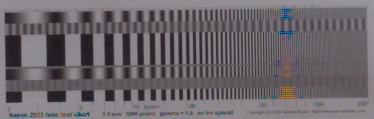
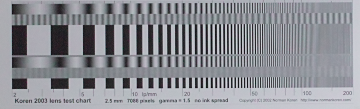

| Sony A7r, CZ Planar 50/1.4 ZF, F5.6, C1Pro v.8 |
|---|
| Sony A7r, CZ Planar 50/1.4 ZF, F5.6, dcraw 9.22 | |
|---|---|
| dcraw -q 0 Bilinear interpolation | |
| dcraw -q 1 Bilinear interpolation VNG interpolation | |
| dcraw -q 2 PPG interpolation |  |
| dcraw -q 3 AHD interpolation | |
| Sony A7r, CZ Planar 50/1.4 ZF, F5.6, ACR и RT | |
|---|---|
| Adobe camera raw | |
| RT amaze, подавление фальшивых цветов максимальное (5) | |
| RT amaze, подавление фальшивых цветов минимальное (0) | |
| Sony A7r, CZ Planar 50/1.4 ZF, F5.6, RAW | |
|---|---|
| "True" colors | |
| Red | |
| Sigma Dp2s, расстояние сьемки 2.5 м, шкала мишени соответствует диапазону 2-200 пар линий на мм |
|---|
| RAW без восстановления цвета | RAW с восстановлением цвета, но без шумоподавления и усиления резкости Foveon Viewer |
SPP |
|---|---|---|
|  |
| Sigma Dp2s, расстояние сьемки 2.5 м, шкала мишени соответствует диапазону 2-200 пар линий на мм |
|---|